Processo de Skip Lote de fichas de análise
Toda vez que uma ficha é adicionada automaticamente, é realizado um controle do histórico de aprovação/rejeição do produto, para definir se o item ainda precisa ser inspecionado ou se é possível considerá-lo “aprovado” mesmo sem inspecioná-lo.
O processo só irá ocorrer se a configuração ‘Ativar Skip Lote’ estiver marcada, caso contrário, as fichas serão adicionadas normalmente, para depois serem inspecionadas.
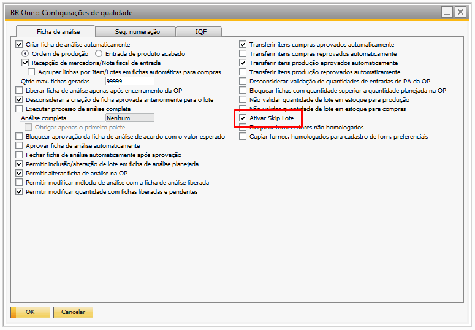{kind=link}
Ao adicionar uma ficha de análise automaticamente, se o sistema não encontrar nenhum ‘Plano de Skip Lote’ vinculado ao produto, a seguinte mensagem será exibida:
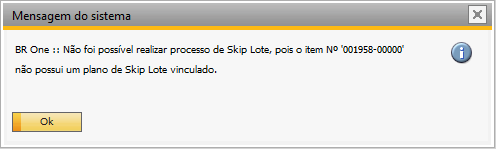{kind=link}
BR One :: Não foi possível realizar processo de Skip Lote, pois o item Nº **XXXX* não possui um plano de Skip Lote vinculado.*
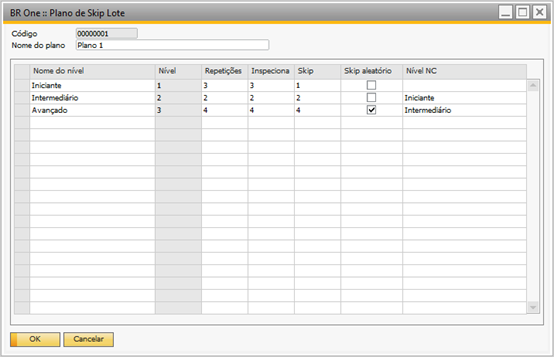{kind=link}
Supondo que o ‘Plano de Skip Lote’ vinculado ao item seja igual ao da imagem acima, e que atualmente o item se encontra no nível ‘Iniciante’. Se de acordo com o histórico de aprovações já foram inspecionadas 3 fichas para esse produto, a próxima ficha, será adicionada já aprovada.
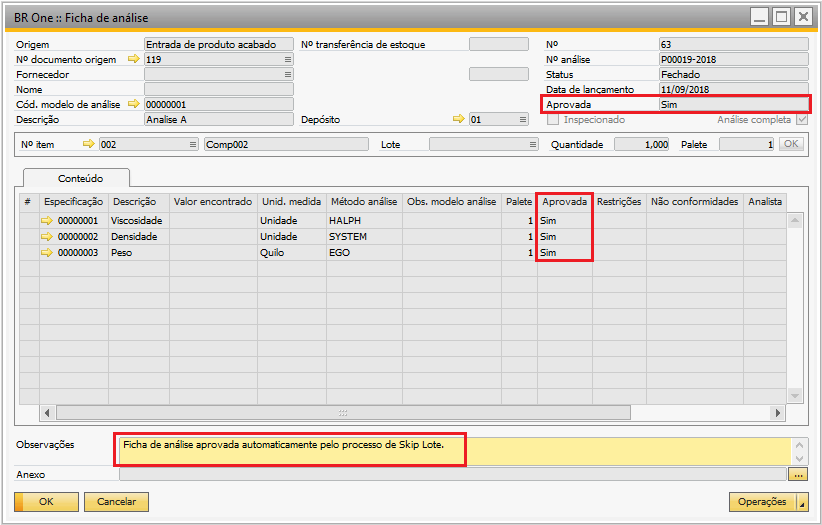{kind=link}
Se o usuário tentar reprovar uma ficha (campo Aprovada = N), o seguinte alerta será exibido:
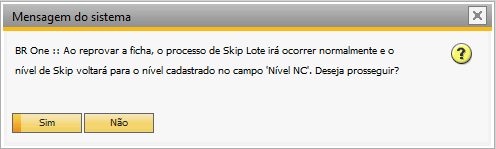{kind=link}
BR One :: Ao reprovar a ficha, o processo de Skip Lote irá ocorrer normalmente e o nível de Skip voltará para o nível cadastrado no campo **Nível NC. Deseja prosseguir?**
Se o usuário selecionar ‘Sim’, o processo seguirá normalmente e a ficha será atualizada, caso contrário, o processo será interrompido e a ficha não será atualizada.
Skip Lote por quantidade acumulada
Se o ‘Plano de Skip Lote’ vinculado ao item for ‘Por quantidade’, a ficha é inspecionada somente se a soma das quantidades acumuladas do item (a cada ficha adicionada) for maior ou igual à quantidade acumulada configurada para o plano.
Caso contrário, a ficha é adicionada já aprovada. Após isso, a soma das quantidades acumuladas do produto é zerada, e as fichas continuam sendo inspecionadas até que atinja novamente a quantidade acumulada configurada.
Cadastro do item
Na tela ‘Cadastro do item’, na aba ‘Qualidade’, é possível visualizar o ‘Plano de Skip Lote’ e o nível em que o item se encontra, ao clicar no botão ‘[…]’.
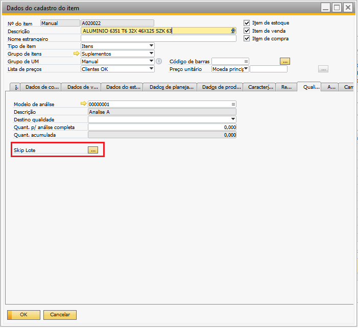{kind=link}
Itens produzidos
Para itens produzidos, é possível visualizar somente o ‘Plano de Skip Lote’ e o nível em que o item se encontra.
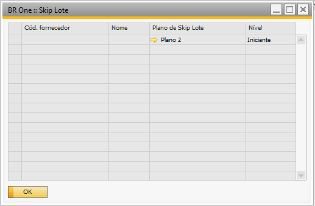{kind=link}
Itens comprados
Para itens comprados, é possível visualizar o ‘Plano de Skip Lote’ e o nível em que o item se encontra, para cada fornecedor já utilizado.
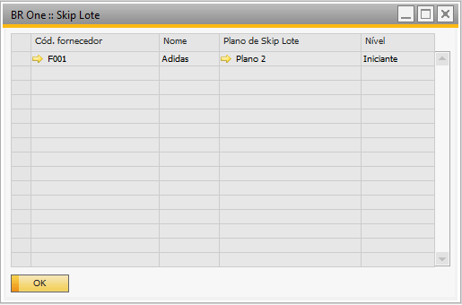{kind=link}
Cadastro de fornecedores
Na tela Cadastro de parceiros de negócio, é possível visualizar todos os produtos adquiridos pelo fornecedor, com seus respectivos planos de Skip Lote e níveis atuais, ao clicar no menu ‘Itens homologados’ (botão direito do mouse).
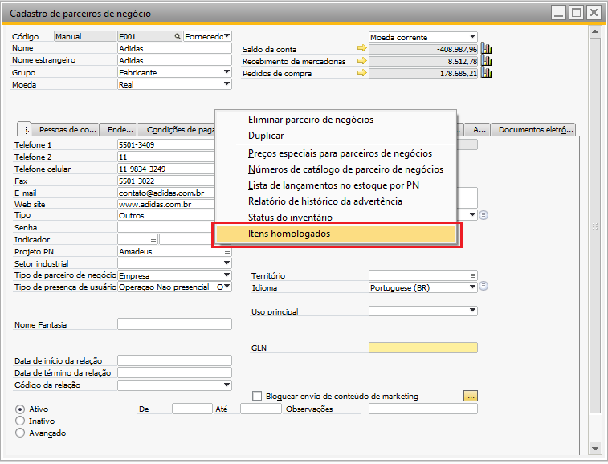 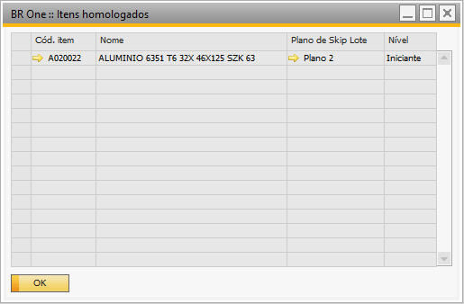{kind=link}
{kind=link}
Se o usuário clicar no menu e o formulário estiver no modo ‘Pesquisar’, ‘Adicionar’ ou ‘Atualizar’, a seguinte mensagem será exibida:
{kind=link}
BR One :: Funcionalidade disponível apenas para registros já inseridos/atualizados.
Se o usuário clicar no menu e o parceiro de negócios não for do tipo ‘Fornecedor’, a seguinte mensagem será exibida:
{kind=link}
BR One :: Funcionalidade disponível somente para fornecedores.
Skip Lote + Transferência automática de itens de produção/compras.
{kind=link}
Se estiver configurado para realizar a transferência automática dos itens aprovados ou reprovados no processo, e o ‘Skip Lote’ estiver ativo, o processo irá realizar a transferência automática após a ‘Aprovação’ pelo processo de skip Lote.
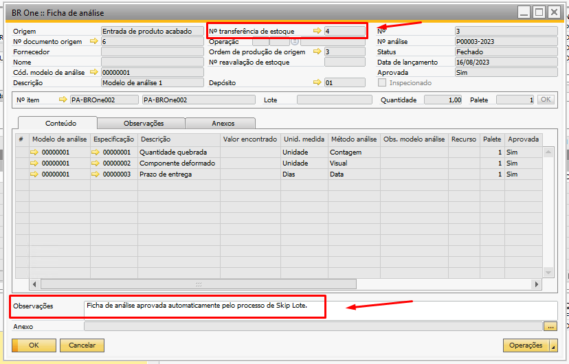{kind=link}